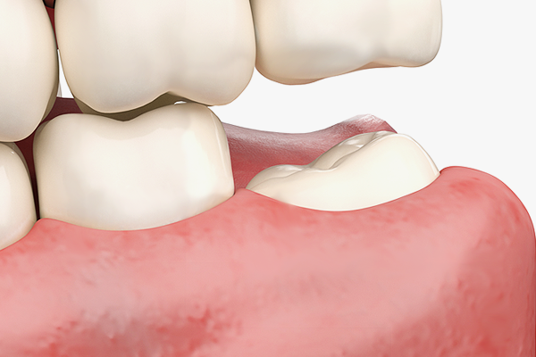

사랑니 발치 후 주의사항 10가지
사랑치는 발치 시 통증이 심한 치아입니다. 비교적 간단한 수술일 것 같지만 이 역시도 외과적인 수술이기 때문에 통증이나 부기, 출혈이 수반되며 통증의 정도는 매복된 정도, 치아 뿌리 모양, 나이, 전신 상태에 따라 달라질 수 있습니다.
아래턱 사랑니를 발치할 때 발생할 수 있는 가장 큰 합병증은 ‘신경 손상’입니다. 아래턱뼈에는 아랫 입술부터 턱 끝까지의 피부 감각, 치아와 잇몸, 혀의 감각을 담당하는 신경들이 지나갑니다. 신경이 사랑니와 닿아있는 경우 발치 후 신경 손상이 발생해 감각이 무뎌질 수 있지만 운동신경은 아니기 때문에 표정, 움직임, 말하기에 영향을 미치지는 않습니다.
- 발치 후 약 1시간 30분 동안 거즈를 꽉 물고 있는다.
- 발치 후 2일 동안 얼굴 쪽을 10~30분간 얼음 찜질하고, 5~10분간 쉬는 방법을 반복한다.
- 발치 후 1~2일은 수술부위를 제외하고 양치질하고, 그 이후에는 수술 부위도 부드럽게 한다.
- 일주일간 자극적이지 않고 부드러운 음식을 섭취한다.
- 1~2일간 더운 목욕이나 사우나는 피한다.
- 무리한 운동이나 업무는 좋지 않으므로 충분한 휴식을 취한다.
- 처방 받은 약은 지시대로 될 수 있으면 모두 복용한다.
- 음식물을 삼키기 어렵거나 오한, 발열 등의 이상 증상이 나타날 때는 바로 병원에 방문한다.
- 술과 담배는 치유에 영향을 미치므로 1주 이상 삼가는 것이 좋다.
- 베개를 평소보다 조금 높게 베는 것이 도움된다.